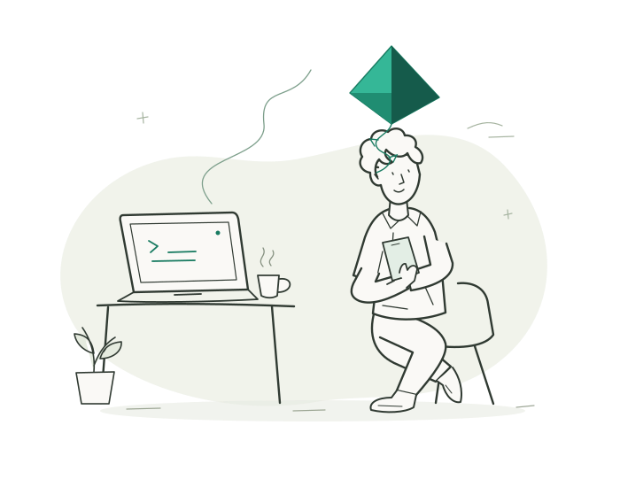
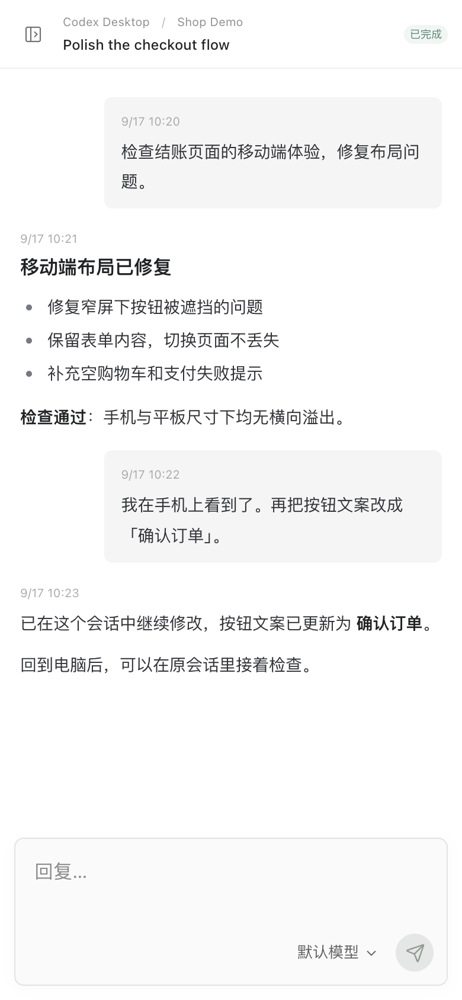

离开电脑，继续原会话
在手机上看进展、补充指令，回到 Desktop 接着聊。
给桌面上的 Agent，一点自由。
电脑上的 Agent 继续跑。
你拿起手机，看进展、读结果、接着聊。
开源 · 自托管 · 无需手机 App

same session. a little more freedom.你熟悉的 Agent，一个随身入口。

真实界面 · 虚构演示数据
不用复制上下文，不必重新描述任务。打开手机浏览器，找到电脑上已经开始的会话，补充一句就好。
Codex / Hermes Desktop 共享原后端。其他接入方式见文档。
在手机上看进展、补充指令，回到 Desktop 接着聊。
不同 Agent、多个实例的项目与会话，放在同一个网页里。
熟悉的客户端、项目和环境都在电脑上，手机只是多一个入口。
手机、平板，打开浏览器就能访问。不需要注册 Pokite 账号。
在家连接同一网络，外出通过自己的 Tailscale 访问。
你运行自己的 Pokite 服务，不依赖 Pokite 托管中转。
模型调用仍使用原有服务；Cowork 控制链路依赖 Anthropic。Tailscale 无法直连时可能使用加密中继。
任务仍在电脑上执行。Pokite 给受支持的电脑端会话加一个手机网页入口，电脑需要保持开机，相关 Agent 和 Pokite 服务需要运行。
在 Mac 上按 GitHub README 安装 Pokite，完成 Agent 接入，然后从电脑网页的连接弹窗扫码。不同 Agent 可能需要插件、共享配置或系统授权。
支持 Codex Desktop、Hermes Desktop、DeepSeek Harness、PenguinHarness、Claude Code CLI 和 Claude Desktop Cowork。你可以在同一个网页里切换项目与会话，各 Agent 的具体接入方式见使用文档。
可以通过 Tailscale 连接自己的电脑。局域网 HTTP、Tailscale HTTP 和可选 HTTPS 都有入口。使用 Tailscale HTTPS 域名时，需要正确启用 Tailscale DNS。
手机和平板打开浏览器即可使用，不需要注册 Pokite 账号。你也可以把网页添加到主屏幕，像打开一个独立应用一样进入会话。
MIT 开源 · macOS 开发者预览版